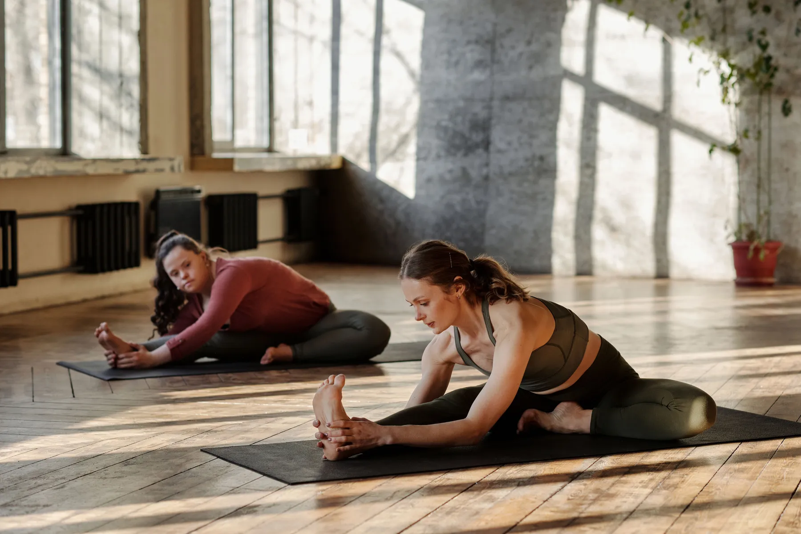
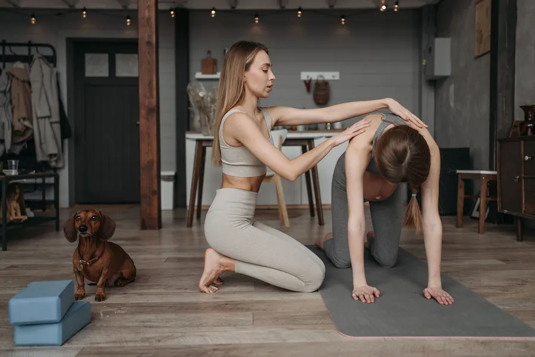
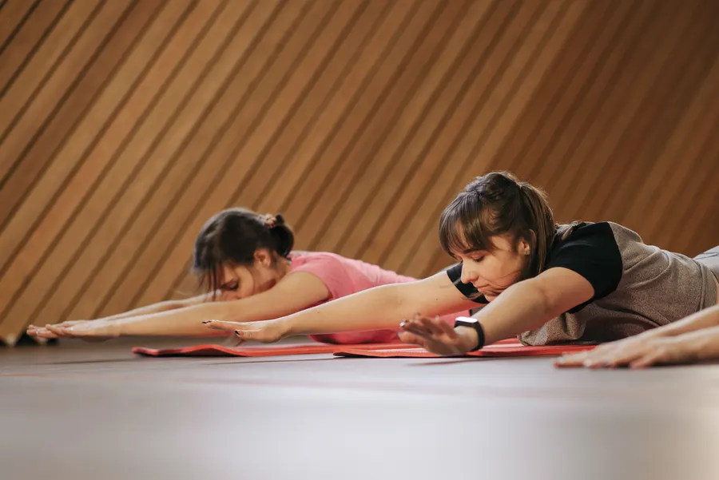

Duruşun, nefesin, kendi temponla.
Mat pilates ve postür (duruş) çalışmaları; bireysel, düet ya da küçük grup. Hamile pilatesi için ayrı program.
Size uyan ders biçimi.
Başlıklar Instagram profilinizden alındı. Yayında her dersin süresi, seviyesi ve kimler için uygun olduğu yazar; fiyatları göstermek isteyip istemediğinize siz karar verirsiniz.
Bireysel ders
Programı yalnız size göre kurulan, en yakından takip edilen ders.
Düet
Bir arkadaşınız, eşiniz ya da annenizle birlikte.
Grup dersleri
Az kişiyle, kalabalık olmayan dersler.
Mat pilates
Kendi vücut ağırlığınızla; core ve esneklik odaklı.
Postür çalışmaları
Masa başında geçen günlerin duruşa etkisine karşı.
Hamile pilatesi
Doktorunuzun onayıyla, döneminize uygun hareketlerle.

İlk dersiniz nasıl geçer?
Yeni başlayanın en çok çekindiği şey bilinmezlik. Bu bölüm "ne giyeyim, ne kadar sürer" sorularını gelmeden cevaplar.
- Kısa tanışmaHedefiniz, varsa ağrı ya da sakatlık geçmişiniz konuşulur.
- Duruş gözlemiEğitmen duruşunuza bakar, programı buna göre kurar.
- Temel hareketlerNefes ve core ile başlanır, zorlamadan ilerlenir.
- Size uygun ders biçimiBireysel, düet ya da grup: birlikte karar verilir.
İki dokunuşla talep.
Ders biçimini ve uygun zamanı seçin; mesaj hazır olarak açılır. Stüdyo telefon ya da WhatsApp hattı eklendiğinde düğme doğrudan oraya gider.
Kınıklı'da, güneş alan bir oda.
- Stüdyo
- Solis Pilates Studio · Kınıklı, Pamukkale / Denizli
- @solis.pilates
